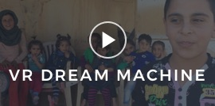
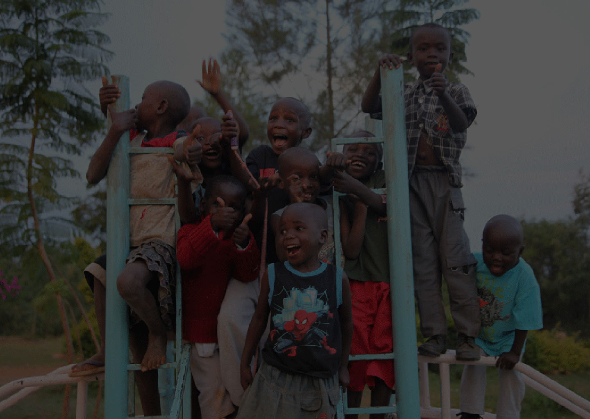

- Next Up:
- 
-

Empowering Kenyan Youth
Documentary Shot in Wagusu, Kenya

Tracing Voices is an online platform which partners with inspiring people to showcase select art and social contributions in the form of short documentaries. Tracing Voices presents these documentaries within their biographical, social and commercial context to enable artists and activists to share their story and the causes close to their heart.
Learn more about the community projects that have come to life in Wagusu, Kenya by scrolling through the sections below.
Meet the Activists
KVCDP and PECK are non-profit organizations dedicated to improving the quality of life for youth in Kenyan communities. Meet the dedicated individuals who have brought these programs to life.
When somebody has education, they can look for innovative programs [...] that can make them be self-reliant.
I can say it's my talent, to teach a child how to pass his or her exam.
I [give the kids] motherly love, console them, and encourage them [to believe] that they have a future.
Timeline
See the Projects
Sarabeth Hearon, a volunteer from Texas, saved over two thousand dollars over two summers to fund the construction of a latrine in a central location of Wagusu, to service the surrounding community. See the below to discover the Peck & KVCDP's projects as well.
PECK projects
- Education Center
- Water Project
- Chicken Coop
KVCDP projects
- Daycare and Orphanage
- Teaching Programs
- Environmental Conservation
About the
Organizations
What I would like to see happen in Kenya is people coming together, because today we are not in good terms.–Emily
The Kenya Community Engagement Project (KPCP) is a non-profit organization with a mission to help children living in difficult conditions in Wagusu, Kenya. Its objective is to help alleviate poverty by facilitating education and creating sustainable projects that can guarantee a better future for children of Kenya. -peckenya.org
Kenya Voluntary and Community Development Project (KVCDP) has been running volunteering programs and medical work camps in Kenya since 2005. Its mission is to connect people with communities in need by supporting educational and charitable work through the placement of international volunteers, distribution of financial and material donations. -kvcdp.org